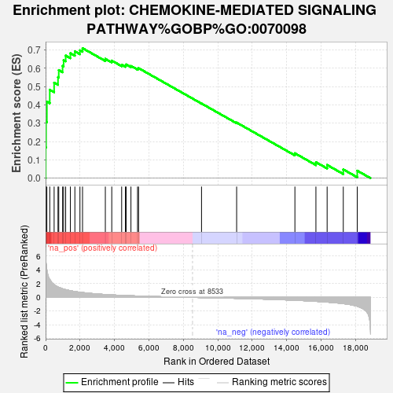
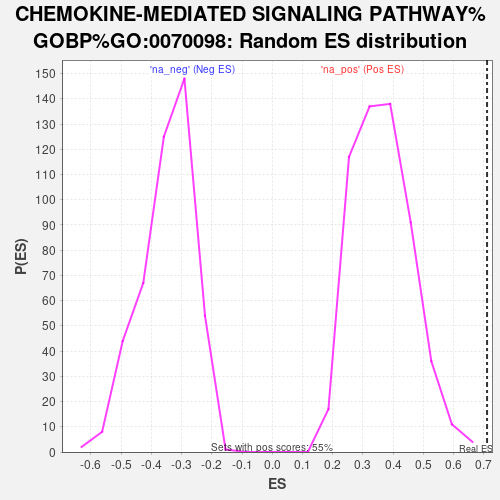

| | | Dataset | GFPPositive_GFPNegative |
| Phenotype | NoPhenotypeAvailable |
| Upregulated in class | na_pos |
| GeneSet | CHEMOKINE-MEDIATED SIGNALING PATHWAY%GOBP%GO:0070098 |
| Enrichment Score (ES) | 0.7104995 |
| Normalized Enrichment Score (NES) | 1.9470862 |
| Nominal p-value | 0.0 |
| FDR q-value | 0.02973035 |
| FWER p-Value | 0.365 |
Table: GSEA Results Summary

Fig 1: Enrichment plot: CHEMOKINE-MEDIATED SIGNALING PATHWAY%GOBP%GO:0070098
Profile of the Running ES Score & Positions of GeneSet Members on the Rank Ordered List
| SYMBOL | RANK IN GENE LIST | RANK METRIC SCORE | RUNNING ES | CORE ENRICHMENT | | 1 | CCL5 | 7 | 6.028 | 0.1685 | Yes |
| 2 | JAK2 | 27 | 5.003 | 0.3076 | Yes |
| 3 | CCL22 | 74 | 4.050 | 0.4185 | Yes |
| 4 | CXCL11 | 242 | 2.631 | 0.4833 | Yes |
| 5 | CXCR4 | 496 | 1.855 | 0.5219 | Yes |
| 6 | SH2B3 | 721 | 1.508 | 0.5522 | Yes |
| 7 | ENTREP1 | 764 | 1.448 | 0.5905 | Yes |
| 8 | CX3CL1 | 986 | 1.259 | 0.6140 | Yes |
| 9 | STK39 | 1047 | 1.215 | 0.6449 | Yes |
| 10 | WNK1 | 1166 | 1.125 | 0.6701 | Yes |
| 11 | THPO | 1439 | 0.975 | 0.6830 | Yes |
| 12 | ACKR3 | 1700 | 0.853 | 0.6931 | Yes |
| 13 | CXCL10 | 1995 | 0.753 | 0.6986 | Yes |
| 14 | PTK2B | 2145 | 0.709 | 0.7105 | Yes |
| 15 | GPR35 | 3469 | 0.418 | 0.6520 | No |
| 16 | WBP1L | 3842 | 0.366 | 0.6425 | No |
| 17 | FOXC1 | 4417 | 0.292 | 0.6202 | No |
| 18 | CCL2 | 4636 | 0.271 | 0.6162 | No |
| 19 | RBM15 | 4676 | 0.266 | 0.6216 | No |
| 20 | CIB1 | 4956 | 0.238 | 0.6134 | No |
| 21 | LYN | 5339 | 0.206 | 0.5989 | No |
| 22 | STAT5A | 5398 | 0.200 | 0.6014 | No |
| 23 | MPL | 9053 | -0.025 | 0.4081 | No |
| 24 | OXSR1 | 11092 | -0.141 | 0.3038 | No |
| 25 | XCL1 | 14475 | -0.417 | 0.1360 | No |
| 26 | GPR75 | 15695 | -0.576 | 0.0874 | No |
| 27 | CCR1 | 16346 | -0.687 | 0.0721 | No |
| 28 | TFF2 | 17284 | -0.905 | 0.0477 | No |
| 29 | CXCL12 | 18095 | -1.287 | 0.0407 | No |
Table: GSEA details [plain text format]

Fig 2: CHEMOKINE-MEDIATED SIGNALING PATHWAY%GOBP%GO:0070098: Random ES distribution
Gene set null distribution of ES for CHEMOKINE-MEDIATED SIGNALING PATHWAY%GOBP%GO:0070098